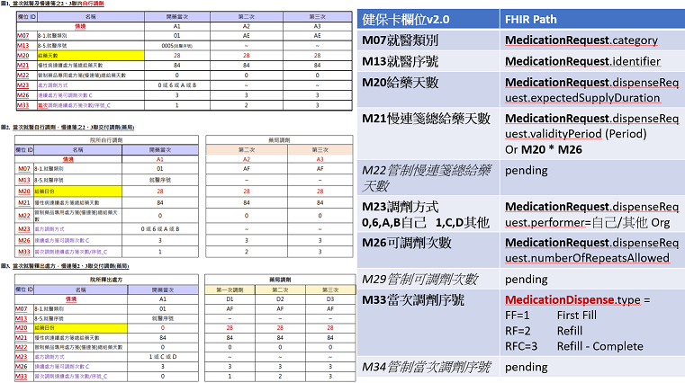

HL7 FHIR Implementation Guide: Continuous Prescription IG Release 0.1.0 - TW | STU1 - Local Development build (v0.1.0) built by the FHIR (HL7® FHIR® Standard) Build Tools. See the Directory of published versions
Home
| Official URL: https://prescription.cgh.org.tw/ImplementationGuide/continuousprescription.MI-TW-2023-WG5 | Version: 0.1.0 | |||
| Draft as of 2024-01-25 | Computable Name: ContinuousPrescriptionIG | |||
此IG主要用於慢性連續處方箋工作流程之資料交換，並繼承於臺灣核心實作指引（Taiwan Core Implementation Guide，以下簡稱TW Core IG）規則。
介紹
醫療健康照護的領域中，資料交換的需求能夠有助於病人連續性照護、醫療資料整合、照護資料應用，然而，不同醫療系統中的資料格式各有差異、資料結構以及欄位內容的標準亦有所落差。 臺灣屬於健保單一給付制度的醫療給付架構，大部分格式、資料標準以健保申報為主，在互操作性上雖然已有既定的架構與規格，但對於醫療醫療單位間之資料交換還是有所落差，大多數的需求都需【客製化】、【唯一化】，每當有資料交換需求或是產生新的傳輸資料架構，往往醫療院所皆須從不同來源的資料重新產製符合格式之資料。 有鑑於此，著手推動統一標準合適的FHIR資料架構，定義完善的資料內容、交換項目，當【交換單張】的需求產生時，可以快速地萃取出需要的資料、以及使用統一的前端介面進行讀取、同時加速資料儲存的效率。
此IG為2023年台灣醫學資訊標準聯測工作小組WG5#照護協調之情境一(Scenario #1)，內容主要以慢性連續電子處方箋等現有衛生福利部或健保署之規範為基礎，進行資料內容的定義，並將其以台灣現有參考台灣FHIR核心實作指引(Tw Core IG)規範為基礎進行設計，納入整體交換架構規範中，期望讓已經有其基礎的醫療院所、醫療資訊服務提供商可以加速落實互操作架構開發，並推動我國醫療單張跨機構交換之效率。
醫療健康照護場域中有許多跨院醫療照護團隊持續性照護的需求，例如轉診轉院、慢性病照護、癌病治療/照護、長期照護等，相關資料不只在醫療專業人員手上處理業務使用，民眾本身也有了解並持有自身電子健康檔案(PHR)的權利，且能促進民眾本身的健康識能。台灣除了民眾向就醫院所申請病歷以外，在衛生福利部不同單位間已有分別建立不同格式之電子病歷、健康資料互通交換格式與規範，本工作小組目標以衛福部下一代主要資訊標準FHIR為核心，向前相容各種已存在之電子交換格式，協助相關醫療健康照護資料更容易歸人彙整於單一標準上，促進不同醫療健康照護機構與專業人員及相關系統可更容易有效率的整合資訊並應用。
本工作小組依據既有非FHIR標準之互通標準，以FHIR標準設計符合台灣醫療照護應用情境資訊需求之慢性連續處方箋 FHIR Resource 規範與通用系統互通操作應用流程，提供產業應用交流與參考，以達到基本的跨系統互通性，並相容衛生福利部 TW Core IG 規範。
臺灣核心實作指引（TW core IG）實作採用HL7® FHIR® standard（Fast Healthcare Interoperability Resources）IG建置方法進行資料欄位選用。TW Core IG在FHIR R4.0.1及國際病人摘要(International Patient Summary，IPS)1.0.0-CI Build之標準基礎上，進一步定義適用於臺灣健康照護資料交換需求的Resources（類似資料表）、其中的資料項目（意即欄位）、基數（意即0..1、0..*、1..1或1..*）、資料類型（文字、日期時間、代碼等）、可綁定的代碼（及其綁定的強制程度）及查詢參數等，旨在提供健康照護資訊系統開發與實作者以TW Core IG為基礎，再進一步訂定其實務專案所需之資料交換格式以應用於專案中。
背景
全國法規資料庫-全民健康保險醫療辦法
健保署-慢性病連續處方箋釋出率
健保署-健保卡資料上傳格式作業說明及健保卡存放
- https://www.nhi.gov.tw/Content_List.aspx?n=82BAB7D9B4829AAE&topn=5FE8C9FEAE863B46
- https://www.nhi.gov.tw/Content_List.aspx?n=865C7F96A6FE3A58&topn=5FE8C9FEAE863B46
衛生福利部 – 電子處方箋交換之欄位
健保署 - QRcode 二維條碼處方箋 資料欄位建置規則
健保署 -全民健康保險慢性病範圍-疾病名稱(特定診療項目代號)
藥師週刊-健保署：慢箋超次申報回溯審查注意事項(上)
全民健保處方及治療明細檔_門急診 西醫 - 衛生福利部
健保署-若處方箋無就醫序號，如何申報費用？且部分醫院之慢性病連續處方箋第一次可看到序號，第二次以後則看不到。
健保署公文-有關特約藥局慢性病連續處方箋第2次以後調劑案件如未填載就醫序號者
醫聖HIS-慢箋調劑「08案件」申報新增需填報原處方序號及總用藥日數
FB-藥師林士峰剛剛收了一張沒有就醫序號也沒有就醫日期的慢性病連續處方箋
系統角色 System Roles:
- Care Provider App:
- The system who create prescription, ex: HIS/EMR of Hospital/Clinic.
- Pharmacy App:
- The system who will dispense medications.
- Patient App:
- The system used by the patient side.
- EHR Repository:
- The system stored prescription, dispense, and administration records, ex: FHIR Server.
交易清單 Transactions:
- Transaction 1: Care Provider App create a continuous prescription.
- Create MedicationRequest with numberOfRepeatsAllowed > 1 & status = active
- Transaction 2: Pharmacy / Patient App search prescription list waiting for dispense.
- Search MedicationRequest by Patient identifier or name & status = active
- Transaction 3: Pharmacy App update prescription status if completed. (conditional)
- Update MedicationRequest status if completed by MedicationRequest.id
- Transaction 4: Pharmacy App create medication dispense record.
- Create MedicationDispense reference to authorizingPrescription (MedicationRequest)
- Transaction 5: Pharmacy / Patient App search medication dispense records.
- Search MedicationDispense by Patient identifier or name & whenhandedover duration
- Transaction 6: Patient App create medication consuming records.
- Create MedicationAdministration reference to request (MedicationRequest)
- Transaction 7: Care Provider / Pharmacy / Patient App search medication consuming records.
- Search MedicationAdministration by patient identifier and effective-time or code or request
Note: Transaction 3 & 4 is a continuous action both by Pharmacy App.
Sequence Diagram:
| Secquence Diagram of Continuouse Prescription | |
|---|---|
 |
健保 IC Card 2.0 檢核欄位對照表
| NHI IC Card 2.0 Fields mapping to FHIR | |
|---|---|
|  |
Profiles
此為連續性用藥處方工作流程所有Profiles規範
ContinuousPrescription Workflow
-
連續性用藥處方 MedicationRequest Profile
-
連續性用藥處方之給藥紀錄 MedicationDispense Profile
-
連續性用藥處方之用藥紀錄 MedicationAdministration Profile
Examples
連續性用藥處方 MedicationRequest 範例
-
連續性用藥處方-啟用(v20230815)
-
連續性用藥處方-完成/完畢(v20230815)
連續性用藥處方之給藥紀錄 MedicationDispense 範例
-
連續性用藥處方之給藥紀錄-首次給藥(v20230815)
-
連續性用藥處方之給藥紀錄-再次給藥(v20230815)
-
連續性用藥處方之給藥紀錄-最後/完成給藥(v20230815)
連續性用藥處方之用藥紀錄 MedicationAdministration 範例
-
連續性用藥處方之用藥紀錄(v20230815)
專有名詞定義
本實作指引基於TW Core IG規則，其部分敘述如下：
Profile
| 英文名 | 中文名 | 說明 |
|---|---|---|
| Name | 名稱 | resource的資料項目名稱(意即XML元素名稱；JSON或RDF屬性名稱)。 有些名稱末端為[x]，圖示為multipleBirth[x]範例，意即可以選擇適用的資料類型表述該資料項目內容值,故需依據資料類型填入適當的內容值，例如Patient.multipleBirth[x]。 |
| Cards. | 基數 | 此資料項目允許出現在這個resource的最小至最大次數，意即例如某一資料項目的基數若為0..1，表示可不填寫或至多填入1筆；若為1..1，表示必須(只能)填入1筆；若為0..，表示可不填寫或填入多筆(不限筆數)；若為1..，表示至少要填入1筆或填入多筆(不限筆數)。 |
| Type | 資料型別 | 資料項目的資料型別(可超連結至該型別的定義)，例如：boolean、integer、dateTime等。 |
| Description &Constraints | 描述與限制 | 此資料項目的描述及詳細的限制。尤其編碼的資料項目可使用何種代碼填寫，如果有特定需要綁定的的代碼，則會以Binding陳述。 |
綁定值集(value set)的強度
| 英文名 | 中文名 | 說明 |
|---|---|---|
| Required | 要求使用 | 應填入代碼表中的其中一個代碼 |
| Preferred | 鼓勵使用 | 鼓勵使用代碼表中的代碼， 但不強制一定要使用此代碼表，你也可使用其他代碼表的代碼或單純以文字表示。 |
| Example | 範例 | 可參考代碼表，但此代碼表只是針對這個欄位的一個可能值的示例，不預期也不鼓勵使用者一定要使用此代碼表的代碼。 |
| Extensible | 可擴充 | 應填入代碼表中適合的代碼，確定無適合的代碼才可以使用其他代碼中的代碼來表示。 |
符合度用語(Conformance Language)
FHIR使用RFC 2119中定義的符合度動詞必須(SHALL)、建議應該(SHOULD)和可能可以(MAY)。而FHIR與RFC 2119不同的是，FHIR允許不同的應用程式因使用可選功能的方式而無法達到可互操作性，特別是：
-
必須(SHALL)：所有實作絕對要符合要求。
-
必須沒有(SHALL NOT)：所有實作絕對禁止的要求。
-
建議應該(SHOULD)/建議不應該(SHOULD NOT)：實作者在特定實作的情境下考慮的最佳或建議實作方法；雖然忽略一個項目可能有正當理由，但在選擇不同的程序之前，必須了解並慎重衡量所有含義。
-
可能可以(MAY)：這是實作者真正可選的要求；可根據實作者的決定使用或不使用，不會造成任何影響。
其餘詳細規則請詳閱TW Core IG網站
 |
作者/貢獻者
| 角色 |
機構名稱 | 姓名 | 所屬單位 | 聯絡方式 |
|---|---|---|---|---|
| 作者 | 九日生行動健康科技股份有限公司/社團法人台灣醫學資訊學會(TAMI) | 李祥豪(Siang Hao Lee) | 社團法人台灣醫學資訊學會(TAMI) | shvoidlee@gmail.com |
| 貢獻者 | 國立陽明交通大學 | 楊宗翰 | 生物醫學資訊研究所 | a3n7219@gmail.com |
| 貢獻者 | 國泰金融控股公司 | 龔筠庭 | 數位數據暨科技發展中心 | macy.kung@cathayholdings.com.tw |
| 貢獻者 | 國泰金融控股公司 | 彭群芳 | 數位數據暨科技發展中心 | vivipeng@cathayholdings.com.tw |
| 貢獻者 | 國泰金融控股公司 | 廖銘宏 | 數位數據暨科技發展中心 | Midas@cathayholdings.com.tw |